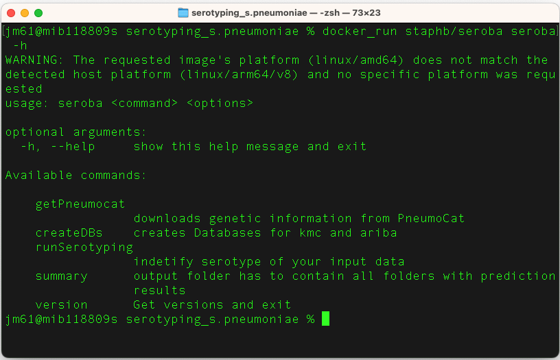
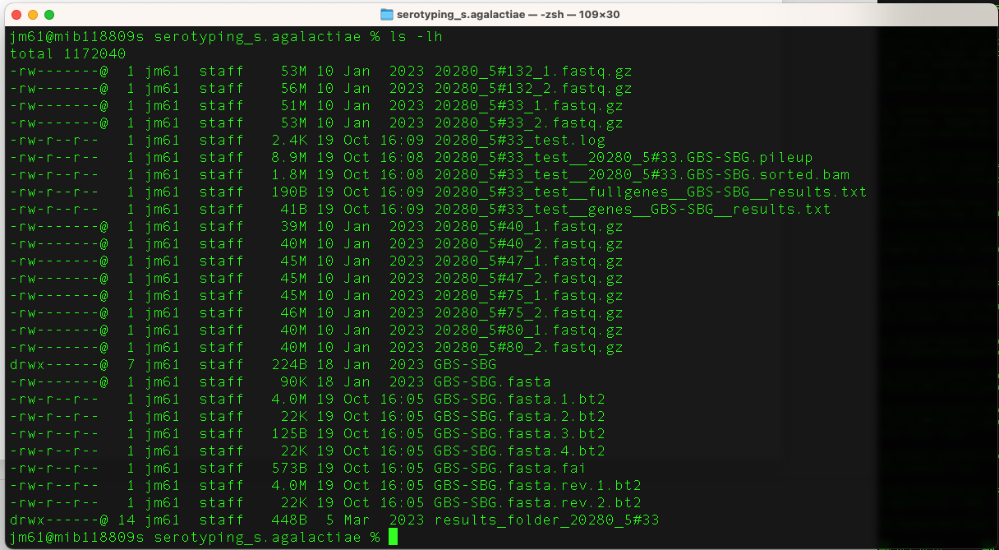
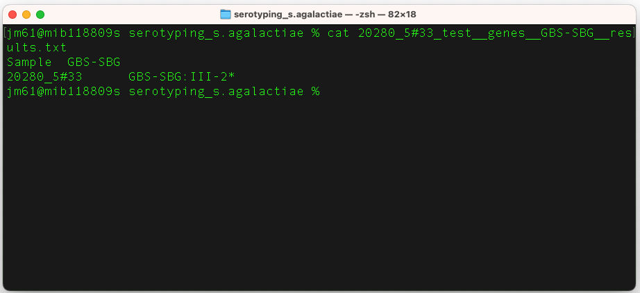

Serotyping - Streptococcus pneumoniae
Before you being this section, navigate to the serotyping_s.pneumoniae folder. You will use this folder and its contents to learn and practice this section.
Overview
To date, there are >100 known serotypes described for S. pneumoniae based on differing biochemical and antigenic properties of the capsule. There are a number of in-silico methods to detect the cps locus, which can then be used to predict serotypes from WGS data. Accurate identification of pneumococcal serotypes is important for tracking the distribution and evolution of serotypes following the introduction of effective vaccines.
Further reading: SeroBA: rapid high-throughput serotyping of Streptococcus pneumoniae from whole genome sequence data
Tool(s)
SeroBA was developed and it makes efficient use of computational resources in addition to accurately detecting the cps locus at low coverage, and it predict serotypes from WGS data using a database adapted from PneumoCaT. SeroBA can predict serotypes, by identifying the cps locus, directly from raw whole genome sequencing read data with 98% concordance using a k-mer based method, can process 10,000 samples in just over 1 day using a standard server and can call serotypes at a coverage as low as 10x. SeroBA is implemented in Python3 and is freely available under an open source GPLv3.
Further reading: SeroBA
You can download SeroBA from docker repositories using the commands:
docker pull staphb/seroba
Predicting serotypes
Explore usage of SeroBA by running:
docker pull staphb/seroba seroba -h

Seroba requires only three inputs:
- Database with kmc (utility designed for counting k-mers) and ariba (Antimicrobial Resistance Identification By Assembly)
- Forward and reverse sequence files in fastq
- Output prefix
First, you can download the PneumoCaT database using the command:
docker_run staphb/seroba seroba getPneumocat
PneumoCaT_dir
This command downloads PneumoCat and build an tsv formatted meta data file out of it. However, for this module we will use seroba_k71_14082017 database as its upto date.
Step 1 - To predict the serotype of a single strain (17150_4#79), we will use the command:
docker_run staphb/seroba seroba runSerotyping seroba_k71_14082017
17150_4#79_1.fastq.gz 17150_4#79_2.fastq.gz 17150_4#79_output
An explanation of this command is as follows:
docker_run:is a function to start a container. The function includes the following flags: docker run --rm=True -u $(id -u):$(id -g) -v $(pwd):/data "$@". To understand the docker_run function read the section [Data and Computational Platforms (Docker)]
staphb/seroba: is the docker image
seroba: is the tool
runSerotyping: specifies that program will perform serotyping
seroba_k71_14082017: are the forward and reverse fastq files
17150_4#79_1.fastq.gz and 17150_4#79_2.fastq.gzspecifies where the seroba directory
17150_4#79_output: specifies the output prefix
In the output folder, you will find a pred.tsv including your predicted serotype.
Step 2 - To predict the serotype of multiple strains,
(i) We will first create a folder for each pair of
compressed fastq files and named after the strain id using the
command:
for x in *1.fastq.gz; do mkdir ${x%%_1.fastq.gz} ; mv $x
${x%%_1.fastq.gz}; mv ${x%%1.fastq.gz}2.fastq.gz ${x%%_1.fastq.gz};
done
An explanation of this command is as follows:
for x in *1.fastq.gz; do: This starts a loop where x takes on the value of each file that matches the pattern "*1.fastq.gz" in the current directory.
mkdir ${x%%_1.fastq.gz}: This creates a directory using the prefix of the file name (i.e., removes "_1.fastq.gz" from the end of the file name).
mv $x ${x%%_1.fastq.gz}: This moves the file with "1.fastq.gz" to the directory created in the previous step.
mv ${x%%1.fastq.gz}2.fastq.gz ${x%%_1.fastq.gz}: This moves the corresponding "2.fastq.gz" file to the same directory.
Here's a brief explanation of the ${x%%_1.fastq.gz} syntax:
${x}: This refers to the value of the variable x.
%%: This is a pattern removal operator
_1.fastq.gz: This is the pattern to be removed.
So, ${x%%_1.fastq.gz} removes the trailing "_1.fastq.gz" from the value of x.
(ii) we will then run seroba using the command:
for x in *#* ; do docker_run staphb/seroba seroba runSerotyping
seroba_k71_14082017 $x/${x}_1.fastq.gz $x/${x}_2.fastq.gz $x"_output";
done
An explanation of this command is as follows:
for x in *#* ; do: This starts a loop where x takes on the value of each file or directory that contains a # in its name.
docker_run staphb/seroba seroba runSerotyping seroba_k71_14082017 $x/${x}_1.fastq.gz $x/${x}_2.fastq.gz $x"_output: This is the command that runs the Docker container. It appears to be running the runSerotyping command from the seroba tool inside the Docker container (staphb/seroba). The specific parameters passed to the runSerotyping command are as follows:
- seroba_k71_14082017:This is an argument passed to runSerotyping
- $x/${x}_1.fastq.gz:The path to the first paired-end FASTQ file.
- $x/${x}_2.fastq.gz:The path to the second paired-end FASTQ file.
- $x"_output":The output directory for the analysis.
The use of $x suggests that the script expects directories with # in their names, and within each directory, there should be paired-end FASTQ files named ${x}_1.fastq.gz and ${x}_2.fastq.gz.
Step 3 - We will then compile the results from the runs above using the command:
docker_run staphb/seroba seroba summary ./
This command will combine the seroba outputs in one tsv file.
Serotyping - Streptococcus agalactiae
Before you being this section, navigate to the serotyping_s.agalactiae folder. You will use this folder and its contents to learn and practice this section.
Overview
Streptococcus agalactiae (Group B Streptococcus, or GBS) are currently divided into ten serotypes based on type-specific capsular antigens and are designated as Ia, Ib, II, III, IV, V, VI, VII, VIII, and IXs.
Further reading: Streptococcus agalactiae (group B Streptococcus)
Tool(s)
Group B Streptococcus Serotyping by Genome Sequencing repository contains a curated reference file which can be used for serotyping Streptococcus agalactiae in silico with whole genome sequencing data. The reference file (GBS-SBG.fasta) is designed to be usable for both short-read mapping and assembly-based strategies.
Further reading: Group B Streptococcus Serotyping by Genome Sequencing
The fasta file in this repository is designed to be immediately usable with SRST2. If SRST2 is not installed in your local machine, you can download them from docker repositories using the commands:
docker pull staphb/srst2
Predicting serotypes - short reads
Step 1 - To predict the serotype of a single strain (20280_5#33), we will use the command:
docker_run staphb/srst2 srst2 --input_pe 20280_5#33_1.fastq.gz
20280_5#33_2.fastq.gz --output 20280_5#33_test --log --gene_db
GBS-SBG.fasta
An explanation of this command is as follows:
docker_run:is a function to start a container. The function includes the following flags: docker run --rm=True -u $(id -u):$(id -g) -v $(pwd):/data "$@". To understand the docker_run function read the section [Data and Computational Platforms (Docker)]
staphb/srst2: is the docker image
srst2: is the tool
--input_pe: specifies the input file are paired end reads which are 20280_5#33_1.fastq.gz 20280_5#33_2.fastq.gz
--output: specifies the output file 20280_5#33_test
--log: switch on logging to file, rather than standard output
---gene_db: specifies the database GBS-SBG.fasta
Run the command ls -lh to check the contents in
the folder. You will get this output

The output file from the above run is “20280_5#33_test__genes__GBS-SBG__results.txt”.
So, cat "20280_5#33_test__genes__GBS-SBG__results.txt" to view the contents of this file

Step 2 - To execute SRST2 on multiple strains, run the command:
docker_run staphb/srst2 srst2 --input_pe *.fastq.gz --output
s.agalactiae --log --gene_db GBS-SBG.fasta
--input_pe *.fastq.gz: specifies the input file are multiple compressed fastq.gz files.